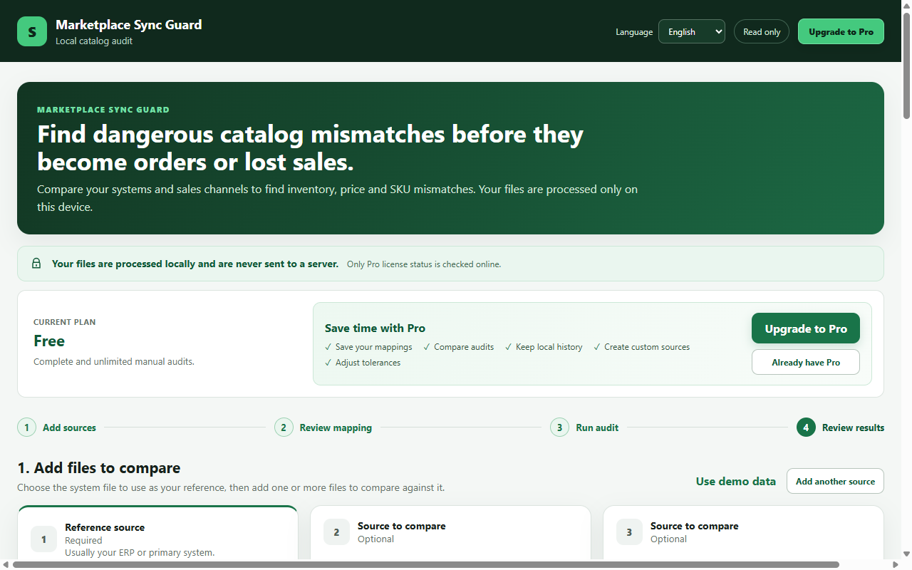
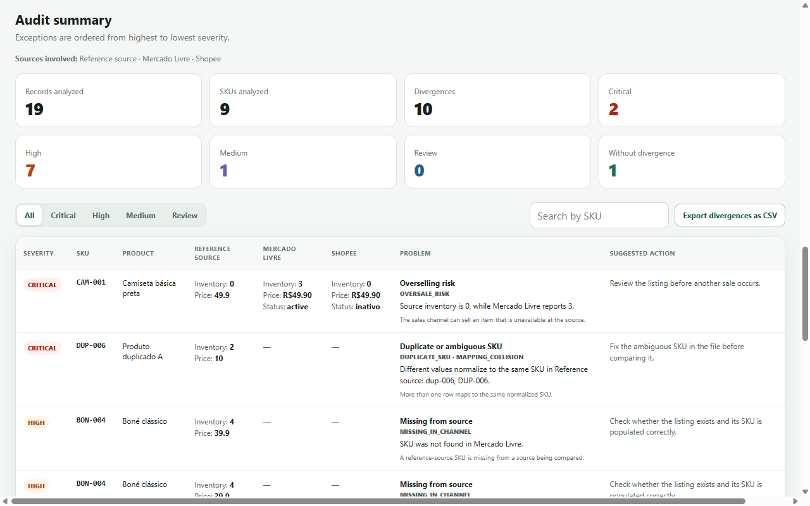
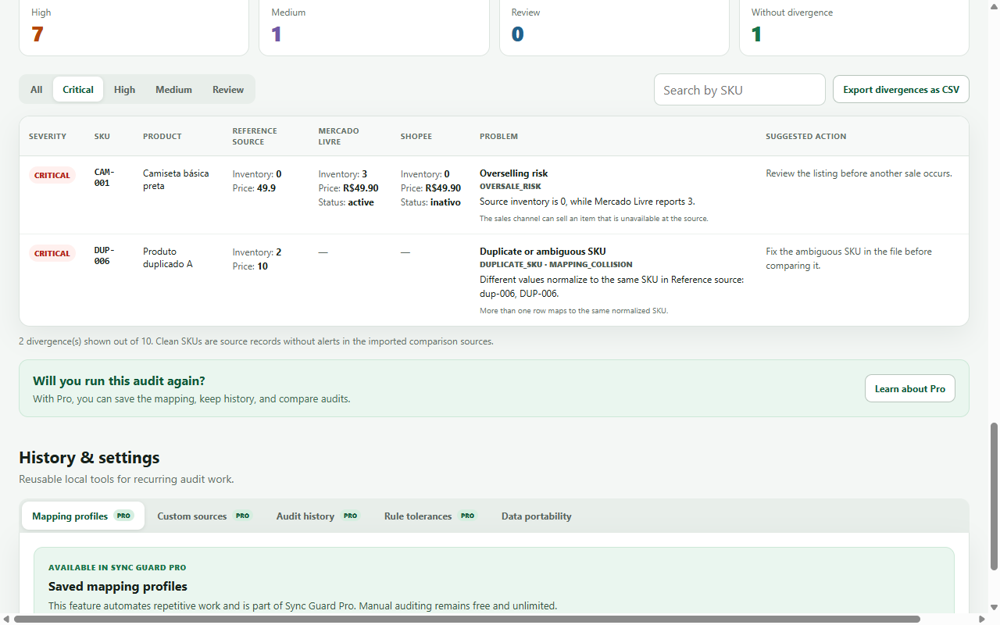

Estoque divergente
Um canal mostra unidades que o ERP já não tem, ou o contrário.
Auditoria de catálogo para operações multicanal
Compare exportações do ERP e dos marketplaces e encontre diferenças de SKU, estoque, preço, presença e status sem dar acesso às suas contas e sem alterar nenhum dado.
Pagamento único via Hotmart. Seus arquivos operacionais permanecem no seu dispositivo.

O problema
Uma sincronização pode concluir sem erro e ainda deixar diferenças escondidas entre o ERP e os canais. O problema normalmente aparece depois — quando o estoque acaba, o preço sai errado ou o SKU não corresponde.
Um canal mostra unidades que o ERP já não tem, ou o contrário.
Diferenças pequenas passam despercebidas até afetarem margem ou conversão.
Itens ausentes, duplicados ou vinculados de forma diferente entre fontes.
Como funciona
Você exporta os dados que já controla e o Sync Guard faz a comparação localmente.
Selecione os arquivos CSV ou XLSX do ERP e de um ou mais canais.
Confirme quais colunas representam SKU, estoque, preço e status.
Receba uma lista priorizada de divergências para investigar e corrigir na origem.
Produto real, não promessa
As telas abaixo são do próprio Marketplace Sync Guard. O objetivo é transformar uma conferência manual cansativa em uma lista clara do que merece atenção.


Planos
Free
Pro
Para quem faz sentido
Confere ERP, Mercado Livre, Shopee e outras exportações antes de uma divergência chegar ao cliente.
Adiciona uma camada independente de QA depois de implantação, migração ou correção de integração.
Troca comparação visual e planilhas improvisadas por um processo repetível e auditável.
FAQ
Sem letras miúdas escondendo como o produto funciona.
Não para realizar a auditoria. Os arquivos CSV/XLSX e os dados operacionais são processados localmente no navegador. Apenas o status da licença Pro é verificado online.
Não. O Sync Guard trabalha com arquivos que você escolhe importar e não precisa das credenciais dos marketplaces.
Não. Ele é somente leitura: identifica divergências e mostra evidências para que você decida o que corrigir na origem.
A compra é processada pela Hotmart. A extensão já está publicada na Chrome Web Store; após a compra, siga as instruções de ativação entregues com o produto para liberar os recursos Founder Pro.
Não. A oferta Founder atual é pagamento único.
Menos conferência no olho
Use o Marketplace Sync Guard como uma camada independente de conferência antes que o problema vire pedido, reclamação ou retrabalho.